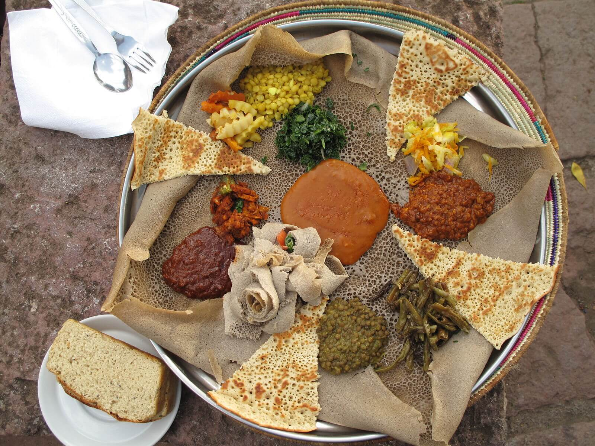

Ethiopia
Injera
Injera is one of Ethiopia's most famous dishes.It is very tasty and can be eaten with a wide range of food.Hopefully you will enjoy this recipe! :)

Ingredients
- 1/4 cup teff flour
- 3/4 cup all-purpose flour
- 1 cup water
- a pinch of salt
- peanut or vegetable oil
Equipment
- a mixing bowl
- a nonstick pan or cast-iron skillet
Preparation
- Put the teff flour in the bottom of a mixing bowl, and sift in the all-purpose flour.
- Slowly add the water, stirring to avoid lumps.
- Put the batter aside for a day or more (up to three days) to allow it to ferment. In this time, your injera batter will start to bubble and acquire the slight tanginess for which it's known. Note: If you find that your injera batter does not ferment on its own, try adding a teaspoon of yeast.
- Stir in the salt.
- Heat a nonstick pan or lightly oiled cast-iron skillet until a water drop dances on the surface. Make sure the surface of the pan is smooth: Otherwise, your injera might fall apart when you try to remove it.
- Coat the pan with a thin layer of batter. Injera should be thicker than a crepe, but not as thick as a traditional pancake. It will rise slightly when it heats.